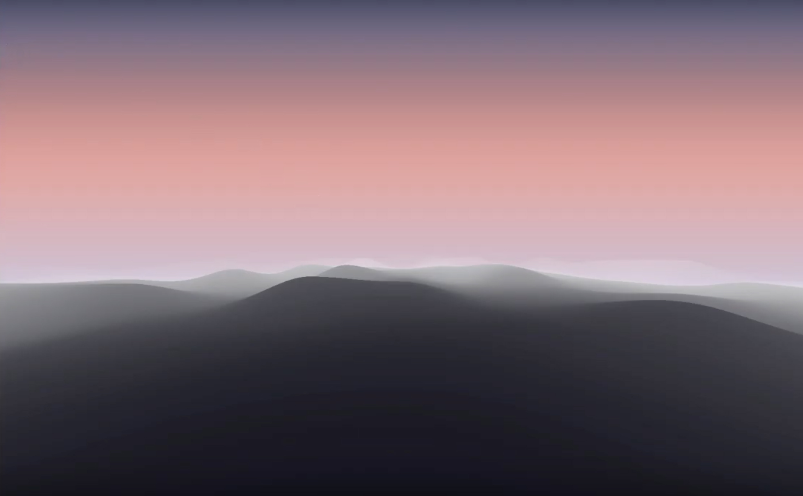
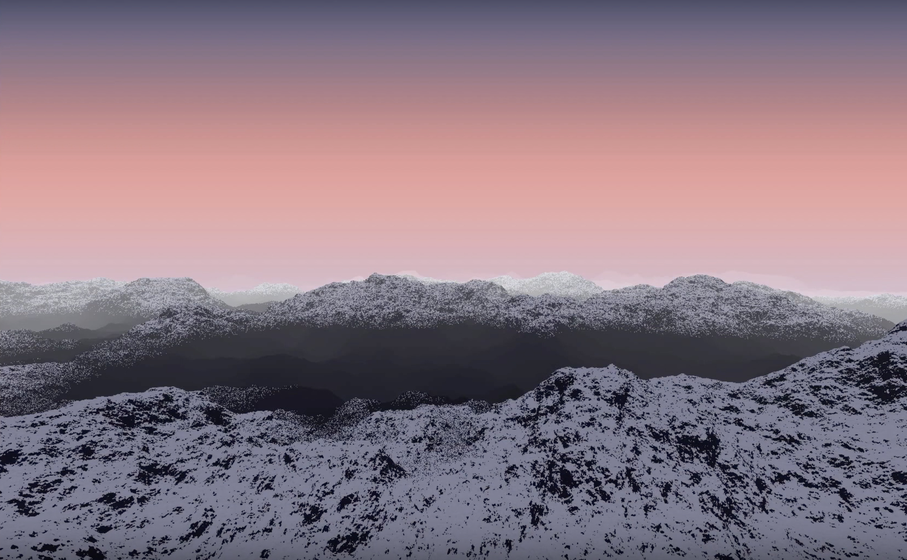
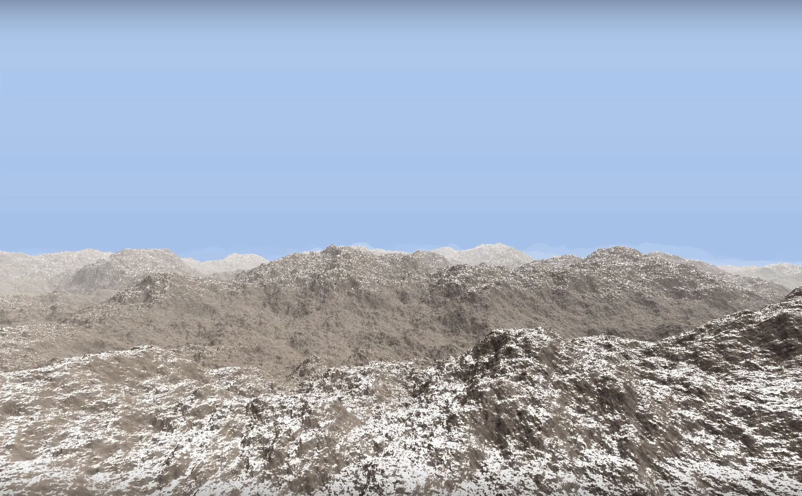

ALPENGLOW
— Terrain Generation
Fall 2018 | Computer Graphics
Alpenglow is a final project for CS1230: Computer Graphics at Brown University completed by Hannah Chow, Mark Sejourne, and Jonathan Chemburkar. This project is the culmination of a semester's worth of graphics-related knowledge + coding skills, and an exercise in our ability to not have a complete breakdown over terrain bugs. It consists of a shader fragment that renders a rocky mountain scene, created through raymarched terrain generation by using a perlin noise function. In addition, we added snow + fog detailing, normal mapping, and mimicked sunset to daylight lighting.
Check out our code or a demo.
Check out our code or a demo.
INTRODUCTION

Conceptualization
Our team wanted to create a cohesive scene that was both complete and flexible by the end of this project. Our first initial thought was to pair a mountain scene with fractal tree generation, but quickly became attached to the thought of trying to make the mountain texture as realistic as possible. We scrapped the fractal trees so as to not cover the mountain, and instead decided to implement other complementary environmental effects such as fog and snow, and have some element of the scene that changed over time. Eventually, we decided that this would be the lighting and colors of the scene. Controls
While our concept for this project was to be more scenic rather than interactive, we wanted to give users the ability to personalize or toggle certain aspects of the rendered environment so as to show off functionality and make demos of our project more fluid! We built a simple UI panel that allows users to affect daytime lighting by syncing the value of the slider to the angle of the sun, change the bumpiness / roughness of the terrain by adding octaves of perlin noise (see below), toggle snow and change the density of the snowfall by changing the surface angle at which it would collect, and toggle normal / texture mapping. FEATURES
After hashing out details about the functionality we would include and the process necessary to achieve that implementation, my group split up to accomplish separate tasks. The features I was responsible for creating include raymarched terrain generation, a snow function, and a fog function.
Terrain Generation
Early on, my group decided to use ray marching to render our scene. We selected this technique for a few reasons. Though ray marching and ray tracing are both iterative rending techniques wherein rays are "shot" through the pixels of a screen and are colored depending on if the ray strikes an object to be rendered, ray tracing depends on the exact intersection point of a specific ray with the surface of an object to be rendered, whereas ray marching move forward incrementally until an estimate for the intersection point is found. This is advantageous in a few ways: first, ray marching takes a shorter time to render as it does not require the precision that ray tracing does. Second, because ray marching is slightly less precise, it is easier and more helpful in rendering surfaces that are non-uniform or otherwise complex (in our case a mountain).
After deciding on ray marching, I moved forward with finding a way to generate realistic, mountainous terrain. First, I used perlin noise to create a function that would semi-randomize the height of each xz point.

A function that creates perlin noise from standard white noise essentially assigns a random height value to each xz point, and then "smoothes" the difference between adjacent points through bicubic interpolation and the use of the mix function. Clusters of similarly-colored pixels start to form, and the heights for these points are dependent on these pixels. The more randomized the noise is, the more spiky terrain will be, as heights will vary wildly from xz point to xz point. Conversely, the more smooth the noise is, the more smooth and "rolling" the terrain will be, as the heights of adjacent points will not vary by much.
After creating the standard height function, I was left with bumpy (but not particularly mountainous-looking) terrain. This terrain lacked realism, as the flow between bumps were too smooth. To solve this issue, I implemented octave-adding, or iterating through different intensities of perlin noise and adding them on top of each other. What this does is layer multiple levels of bumps over one xz point, so that the texture of the terrain retains the original spacing of the peaks and valleys, but becomes more rough and rocky. Additionally, I used smoothstep, a function that boosts the peaks of terrain and keeps the rest of the land flat.
Snow Function
The mountain terrain was complete, but it was all shaded gray rock – not very interesting! I decided to implement snow, and did so through writing a function that calculated the angle of the surface normal (perpendicular plane) at a particular point. If the difference between the surface normal of flat land and the calculated surface normal was below a certain threshold, the shading of the point was changed. I wrote the function to be this way because snow tends to collect on flatter surfaces, so these surfaces' shading was altered to mimic that of snow: white, with more reflective qualities and a higher specular (shininess) component. However, this caused the snowline to look a bit too cut-off and sudden for my liking. Because of this, I altered the function to add a soft gradiation of heights along the snowline. Depending on the height cut-off of a certain xz line, only xyz points up to that cut off would be colored with a snow-specific model.


Fog Function
Finally, as a finishing touch, I implemented an exponential fog function. This function blended the base gray color of the mountains together with the tint of the sky, as well as a bit of pure white to create more of a cloudy haze. This blend is the most opaque near the peaks of the backmost mountains, and then fades exponentially depending on distance as it moves behind or in front of those mountains.
CONCLUSION
By far the most difficult parts of this project for our group were understanding ray marching and linking all the different parts of the project together in our fragment shader. We had implemented ray tracing as an earlier project in the semester, and though they are similar, having to change our frame of thinking to acommodate making approximations of intersection points using ray marching instead of exactly pinpointing them was challenging.
Combining all of our parts together was also difficult, particularly in regards to lighting and materials. Because we hardcoded sunrise lighting, ensuring that the snow and mountain were lit properly at different angle changes, as well as bathed in the proper tone of lighting, took a lot of careful tweaking. Mixing these colors with the mountain base color to create fog was also challenging, as we needed to create the illusion of somewhat transparent fog instead of simple solid coloring.
This project took a lot of painstaking attention to details but was ultimately a huge success. Becoming more comfortable with working just in fragment shaders and creating a gorgeous, cohesive scene was so rewarding, and gave me a new love for terrain manipulation and Shadertoy.
Combining all of our parts together was also difficult, particularly in regards to lighting and materials. Because we hardcoded sunrise lighting, ensuring that the snow and mountain were lit properly at different angle changes, as well as bathed in the proper tone of lighting, took a lot of careful tweaking. Mixing these colors with the mountain base color to create fog was also challenging, as we needed to create the illusion of somewhat transparent fog instead of simple solid coloring.
This project took a lot of painstaking attention to details but was ultimately a huge success. Becoming more comfortable with working just in fragment shaders and creating a gorgeous, cohesive scene was so rewarding, and gave me a new love for terrain manipulation and Shadertoy.